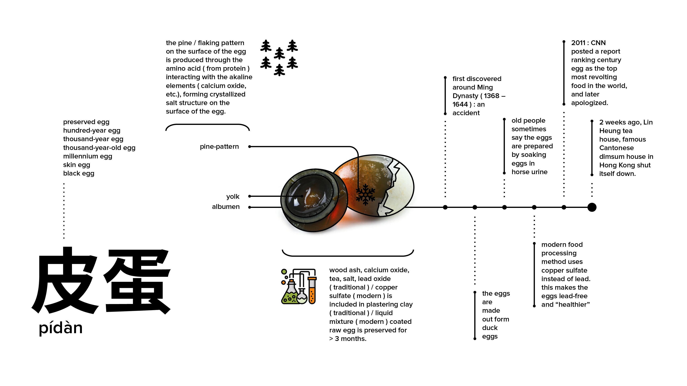
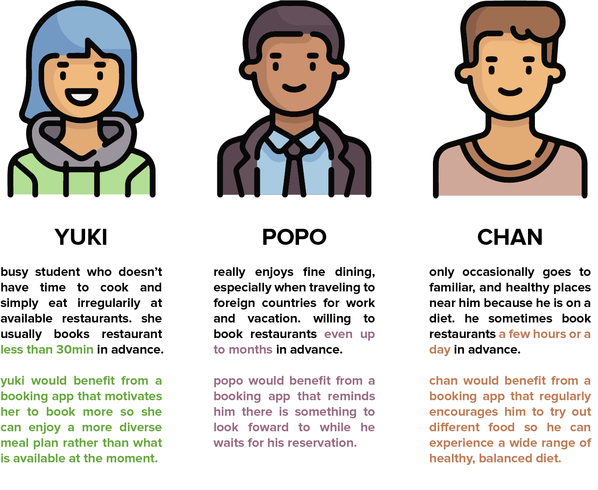
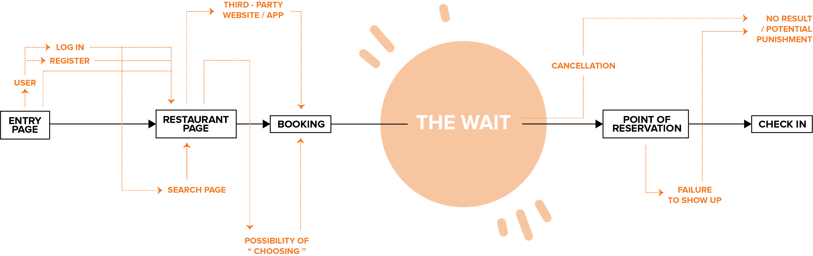
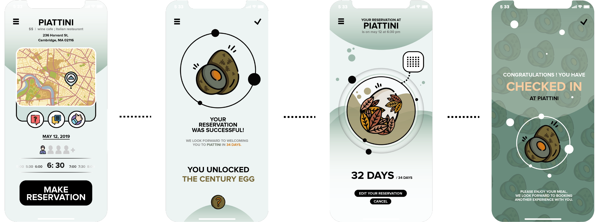
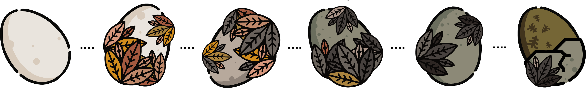

L U C Y Y I P
DESIGN | TECH | MATERIAL | WILDCARD
REDESIGNING FOOD EXPERIENCE
BOCHI THE APP
CONCEPT
BOCHI is a restaurant booking app that assigns you an ingredient every time you make a reservation. Based on how far in the future your reservation is, an cooking ingredient that takes the same amount of time to prepare appears and lives in the app (like a pet, a tamagotchi) and will start preparing, processing itself until it is virtually “ready” at the time of your reservation. It will interact with you and show you how it is transformed over time.
This app is designed remind people of their reservations, help them gain awareness of food diversity / culture - specific cooking.
USER, FOOD, SUBJECT & MARKET RESEARCH
" Pidan, or Century Egg / Thousand - Year Egg, is a Chinese preserved food product and delicacy made by preserving duck, chicken or quail eggs in a mixture of clay, ash, salt, quicklime, and rice hulls for several weeks to several months, depending on the method of processing. Through the process, the yolk becomes a dark green to grey color, with a creamy consistency and strong flavor due to the hydrogen sulfide and ammonia present, while the white becomes a dark brown, translucent jelly with a salty flavor. "
TARGET DEMOGRAPHICS : KNOWLEDGE & INTEREST
Through interviews and survey-monkey, I was able to gather some initial demographics data and restaurant booking habits.
The responses vary between individuals and their country of residence (which is supportive of the initial app idea). The majority of respondents indicated they usually book a few hours to a few days ahead, while in special circumstances (chef's menu special events at restaurants, etc.) they tend to book weeks in advance.
The reasons behind restaurant booking are also quite diverse. Most answered reasons similar to "popular restaurants are hard to get in" and "I always book when we have a party of 4 or more"; a few other mentioned booking as a means to "motivate myself to try new restaurants, its like signing up for a gym membership and yoga lessons", which are on the personal side of things.
FOOD TIMELINE
is a restaurant booking app that assigns you an ingredient everytime you make a reservation. Based on how far in the future your reservation is, an cooking ingredient that takes the same amount of time to prepare appears and lives in the app (like a pet, a tomagotchi) and will start preparing, processing itself until it is virtually “ready” at the time of your reservation. It will interact with you and show you how it is transformed over time.
This app is designed remind people of their reservations, help them gain awareness of food diversity / culture - specific cooking.
PERSONA & TARGET
Through taking advantage of the break between making a restaurant reservation and dining at the restaurant, BOCHI is an app designed to transform the waiting experience, educate its users about food diversity, and motivate people to make more reservations in advance so restaurants can also benefit from the statistics / data to adjust their way of operation.
The personas on the left are based on habits observed from people, put together to real the key narratives making up the decision tree in this project.
WORKFLOW & OPPORTUNITY WINDOW
TEST UI

This was a quick project so I didn't spend much time on the UI. They were more for illustrating the goals and interactions of this app. Ideally, BOCHI would have detailed illustration of the process of the specific ingredients along with information regarding the relevant chemistry, associated culture / tradition, content to demystify, etc. The graphical characteristics should be light-hearted, aiming to relieve the user from the dreadful long wait.